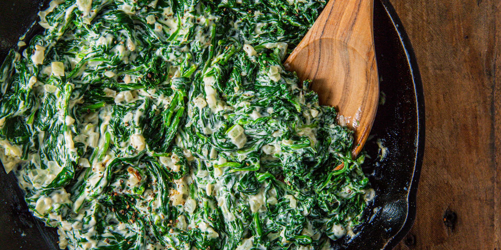

Ingredients
- 20 oz. baby spinach
- 2 tbsp. butter
- 1/2 c. milk
- 1/4 c. heavy cream
- 4 oz. cream cheese
- Kosher salt
- Freshly ground black pepper
- Pinch cayenne pepper
- 1/4 c. freshly grated Parmesan
- In large pot of boiling salted water, cook spinach for 30 seconds. Drain and place in a bowl of ice water. When cool enough to handle, drain and squeeze out as much excess water as possible.
In a large skillet over medium heat, melt butter.
- Add and onion and cook until soft, 5 minutes. Add garlic and cook until fragrant, 1 minute more.
Add milk, heavy cream, and cream cheese to skillet. Simmer until cream cheese is melted. Season with salt, pepper, and a pinch of cayenne.
- Add spinach and Parmesan and stir to combine.